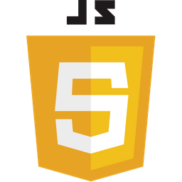
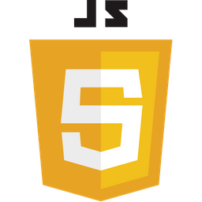

2017
< BAC S / spécialité mathématiques >
Juillet 2017
Obtention de mon BAC. J’avais choisis la filière S, car mon esprit logique est mon point fort. De plus je prenais un réel plaisir à faire des mathématiques.
Bonjour je m'appelle
C’est à dire que je crée des sites webs pour les entreprises, qu’elle soit grandes ou juste naissantes. Ce que je peux réaliser va du site vitrine au site e-commerce en passant par l’intranet. Je peux aussi si cela est nécessaire m’occuper du design de votre projet.
Je m’appelle Théo et j’ai 22 ans. Je m’intèresse à la programmation depuis un petit moment déjà et ne cesse de vouloir progresser dans ce milieu. Je dirais que mon plus grand point fort est ma soif d’apprendre et de progresser. Je suis quelqu’un de curieux, ce qui fait de deux atouts majeurs nécessaires dans ce milieu. Je souhaite continuer dans ce milieu et j’ai hâte de voir où cela me mênera
 



HTML5
2017
Juillet 2017
Obtention de mon BAC. J’avais choisis la filière S, car mon esprit logique est mon point fort. De plus je prenais un réel plaisir à faire des mathématiques.
2018
Février 2018 - Mai 2018
Après une erreur d’orientation je me mets à travailler dans un E.Leclerc tout en reprenant la programmation en autodidacte avec le language C, bien décidé à en faire mon métier.
2019
Septembre 2018 - Juillet 2019
Je réussis cette première année dans laquelle j’ai utilisé le language processing. J’ai aussi réalisé un projet de groupe sur l’algorithme Ford-Bellman ( recherche du chemin le plus court dans un grapge pondéré et orienté ).
2020
Septembre 2019 - Octobre 2020
Changement d’université, début de deuxième année, je ne me sens pas à ma place, je ne suis pas épanoui, il n’y a pas assez de pratique pour moi. Une opportunité s’offre à moi, je tente ma chance et je commence une formation avec OpenClassrooms, intitulé Prep’FullStack. Je complète la formation et pour continuer je dois trouver une alternance, en mars 2020.. Période de confinement. Mes recherches sont vaines.
2021
Octobre 2020 - Avril 2021
Étant autonome je retourne travailler dans la grande distribution par nécessité. Je continue à chercher une solution d’orientation.
2022
Octobre 2021 - Juillet 2022
Formation professionnel de Developpeur Web et Web Mobile. À la fin de cette année je serais à l’écoute d’opportunité, comme une embauche direct ou encore une alternance pour monter en compétence. Si aucune de ces opportunités ne se présente je me lancerais en freelance.
Site WordPress réalisé dans le cadre d’un projet OpenClassrooms. Site factice de vente et de location de chalet.
Site Vitrine d’une entreprise factice de communication digitale
Réalisation d’un extranet d’acteur bancaires dans la cadre d’un projet OpenClassrooms
Si mon profil vous intérèsse ou si il a suscité des interogations n’hésitez pas à me contacter je me ferais un plaisir de vous répondre. De même si vous souhaitez juste échanger avec moi. Le moyen de communication que je priviligie est le mail. Je vous invite aussi à faire un tour sur mes différents réseaux et notamnent ma page GitHub que je mets régulièrement à jour. Merci de vous être intéressé à mon profil !
Envoyer un mail